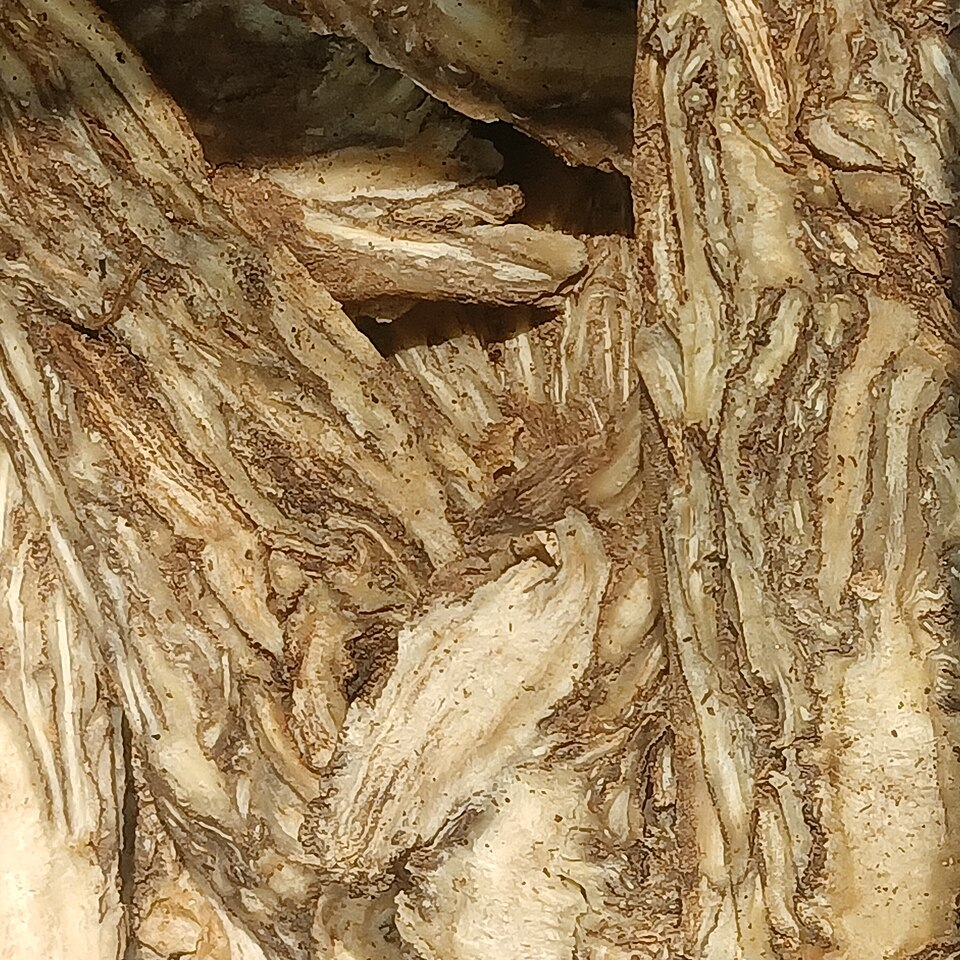

Dāngguī · Chinese Angelica Root当归
Angelicae Sinensis Radix · Tonifying herbs: blood tonicsAngelicae Sinensis Radix · 补虚药·补血药



.jpg){kind=link}
- Flavour · nature性味
- sweet, acrid; warm甘、辛，温
- Channels归经
- Liver, Heart, Spleen肝、心、脾经
- Direction升降浮沉
- Warm, sweet and pungent; its sweetness nourishes while its pungency promotes movement. It both nourishes and invigorates blood, with simultaneous tonifying and moving actions, and also moistens the intestines.辛温而善行，甘温而善补，既能补血，又能活血；归肝、心、脾经，补中有行、行中有补，兼能润肠通便。
- Toxicity毒性
- Non-toxic无毒
- Dose (pharmacopoeia)用量（药典）
- 6–12 g (ceiling 12 g)（上限 12 克）
Decocted, usually after slicing. Wine-processed Dang Gui is traditionally more directed toward invigorating blood and regulating menstruation; use the preparation specified in the prescription.煎服。通常切片入煎剂；酒当归偏于活血通经，具体炮制品应按处方要求使用。 - Pregnancy孕期
- Caution in pregnancy孕妇慎用 The 2020 Chinese Pharmacopoeia entry for Dang Gui has no precautions section and lists no pregnancy caution; this site still advises caution. Health Canada's TCMI and individual Dong Quai monographs advise against use during pregnancy or breastfeeding. Because the regulatory wording differs, the more restrictive Health Canada warning should guide safety decisions. Self-use of dong quai or natural health products containing it is not recommended during pregnancy or breastfeeding.《中国药典》2020年版一部当归项下未设「注意」，未列孕期条；本站从严按慎用。加拿大卫生部 TCMI 专论及 Dong quai 单味专论要求孕期或哺乳期勿用。不同监管体系的表述并不完全相同；实际安全判断应采取较严格的加拿大卫生部警示，不建议孕期或哺乳期自行使用当归或含当归的天然保健产品。
- Health Canada加拿大卫生部
- Health Canada: monograph加拿大卫生部：有专论 Health Canada's Natural Health Products Ingredients Database (NHPID) Traditional Chinese Medicine Ingredients monograph, dated May 29, 2026, lists Angelica sinensis (Dang gui, Radix Angelicae Sinensis) in Table 1: General Medicinal Ingredients. Products must carry the relevant risk statements: do not use during pregnancy or breastfeeding; consult a healthcare practitioner before use if taking prescription medication or if suffering from a serious disease or acute infection; discontinue use and seek medical advice if symptoms persist or worsen. The individual Dong Quai - Angelica sinensis monograph must also be applied through the Angelica species cross-reference. Inclusion in Table 1 does not mean unrestricted use at every dose or in every dosage form. The ingredient restrictions and applicability conditions in Tables 3 and 4 must be checked against the original TCMI tables; Table 1 inclusion must not be interpreted as an exemption from restrictions that may apply under those tables. This status is based on the supplied targeted Health Canada research record.加拿大卫生部天然健康产品数据库（NHPID）的 Traditional Chinese Medicine Ingredients（TCMI）专论（May 29, 2026）收录 Angelica sinensis（Dang gui，Radix Angelicae Sinensis），列于 Table 1：General Medicinal Ingredients。产品必须标注相应风险语：孕期或哺乳期勿用；正在服用处方药、有严重疾病或急性感染者，使用前咨询医务人员；症状持续或加重时停止使用并就医。该单味药还必须套用 Angelica species 对应的 Dong quai - Angelica sinensis 单味专论风险要求。Table 1 的收录不等于该成分在任何剂量、任何剂型下均可自由使用；Table 3 与 Table 4 的成分限制及适用条件须按 TCMI 专论原表核对，不得把 Table 1 的一般成分收录解释为豁免其他表格适用的限制。本条状态依据所提供的加拿大卫生部专门检索记录。
- Conservation资源与保护
- Dong quai is a commonly cultivated medicinal plant. The available sources for this entry do not establish that it is listed in the CITES Appendices or China's National Key Protected Wild Plants List. Its status as a medicinal plant alone does not establish that it is endangered. Medicinal material should be obtained through legal and traceable supply chains and should meet applicable quality standards.当归为常用栽培药用植物，目前本条可用来源未提供其列入 CITES 附录或中国国家重点保护野生植物名录的证据。不能仅凭当归属于药用植物就推定其为濒危物种。药材采购应选择来源清楚、符合药品质量标准的合法产品。
- Source来源
- Angelica sinensis (Oliv.) Diels. The dried root of Angelica sinensis (Oliv.) Diels, a member of the Apiaceae familyAngelica sinensis (Oliv.) Diels（当归）。伞形科植物当归的干燥根
Traditional actions and indications功效与主治（传统）
🏛 Traditional statements, not efficacy claims; the modern evidence is graded further down.以下为传统说法，不是疗效主张；现代证据见下文分级。
- Nourishes and invigorates blood补血活血
- Regulates menstruation and alleviates pain调经止痛
- Moistens the intestines and promotes bowel movements润肠通便
Blood deficiency with a sallow complexion, dizziness or palpitations; irregular menstruation, amenorrhoea and dysmenorrhoea; abdominal pain due to deficiency-cold, and painful obstruction associated with wind-dampness; traumatic injuries, abscesses and sores; and constipation due to intestinal dryness. It is used to nourish blood in blood-deficiency patterns and invigorate blood in blood-stasis patterns, particularly in gynaecological prescriptions.血虚萎黄、眩晕心悸；月经不调、经闭痛经；虚寒腹痛、风湿痹痛；跌扑损伤、痈疽疮疡；肠燥便秘。补血常用于血虚证，活血常用于血瘀证；妇科调经及血虚兼血瘀证是临床常见应用方向。
How to recognise it怎么认
Growing植株 A perennial herb generally about 0.4–1 metre tall. Its cylindrical root has a distinctive strong aroma. The erect stem is purple or purplish-green. Alternate leaves are divided two or three times into pinnate segments, with an overall ovate outline. Small white or pale green flowers appear in compound umbels in summer. The fruit is an oval schizocarp that separates into two mericarps when mature. The developed underground root system is the medicinal part. Wild and cultivated plants may differ in appearance, so identification should consider botanical characteristics and provenance.多年生草本植物，通常高约0.4—1米。根圆柱形，具有明显的浓郁香气；茎直立，带紫色或紫绿色。叶互生，二至三回羽状分裂，叶片轮廓呈卵形；夏季开白色或淡绿色小花，组成复伞形花序；果实为椭圆形双悬果，成熟后分裂为两个分果。地下根系发达，是药用部位。野生或栽培植株的外观可能存在差异，鉴定时应结合植物学特征和来源。
Decoction pieces饮片 The crude root is generally cylindrical or irregularly knotted, with an enlarged crown, a relatively thick main root and numerous curved lateral roots. Its surface is yellow-brown to dark brown, with longitudinal wrinkles and transverse lenticel-like marks. Slices are round or oval and relatively thin, with yellow-brown to dark brown outer margins and yellowish-white to pale yellow-brown cut surfaces. The cortex is relatively thick, the cambium ring is distinct, and the wood shows radial markings. The texture is flexible and may feel slightly oily. The aroma is strong and characteristic; the taste is sweet, pungent and slightly bitter. Good-quality slices generally have a noticeable aroma and some oily appearance. Mould, insect damage or abnormal odours should not be accepted as normal quality characteristics.药材通常呈略圆柱形或不规则结节状，根头膨大，主根较粗，支根多而弯曲，表面黄棕色至棕褐色，有纵皱纹及横向皮孔样痕迹。饮片为类圆形或椭圆形薄片，外缘黄棕色或棕褐色，切面黄白色至淡黄棕色，皮部较厚，形成层环明显，木部可见放射状纹理；质柔韧或略有油润感。气浓郁而特异，味甘、辛、微苦。优质饮片通常香气明显，切面具有一定油润性；若有霉变、虫蛀或异常气味，不应仅凭外观判断为合格药材。
Processing炮制
- Whole Dang Gui全当归：: The intact dried root, retaining the root crown, main root and lateral roots, traditionally used for both blood nourishment and blood invigoration.完整干燥根，保留根头、主根和支根，兼具补血与活血作用。
- Dang Gui Tou当归头：: The root crown, traditionally considered more directed toward stopping bleeding. This is a traditional part-specific processing distinction rather than a separate pharmacopoeial indication.根头部分，传统炮制分类中偏于止血；属于传统部位分用经验，不应将其理解为药典规定的独立功效。
- Dang Gui Shen当归身：: The main root, traditionally considered more directed toward nourishing blood.主根部分，传统认为偏于补血。
- Dang Gui Wei当归尾：: The lateral roots and root tips, traditionally considered more directed toward invigorating blood.支根及根尾部分，传统认为偏于活血。
- Wine-Processed Dang Gui酒当归：: Processed with wine and traditionally considered more directed toward invigorating blood and regulating menstruation. Its processing specifications and quality should follow pharmacopoeial and prescription requirements.经酒炙处理，传统上偏于活血通经；具体炮制规格与质量应以药典及处方要求为准。
Cautions and incompatibilities使用注意与配伍禁忌
Use cautiously in people with excessive dampness, epigastric or abdominal fullness, or loose stools, as the standard textbook advises (the pharmacopoeia entry has no precautions section). Its warm, moving nature requires pattern differentiation between blood deficiency and blood stasis, as well as assessment of cold, heat and deficiency patterns. It should not be self-prescribed solely for symptoms such as irregular menstruation or abdominal pain. Pregnancy requires particular caution (not listed in the pharmacopoeia; this site is stricter, see Pregnancy). People taking anticoagulants, especially warfarin, should be aware of a potential interaction. A human case report describes enhanced anticoagulation when dong quai was taken with warfarin, but a single case cannot establish the magnitude of risk for all patients. Unusual bleeding, bruising or other adverse reactions require medical assessment. Health Canada's relevant monograph additionally advises against use during pregnancy or breastfeeding.湿盛中满及大便溏泄者慎用（规划教材口径；药典当归项下未设注意）。辛温而善行，临床使用应辨别血虚与血瘀及寒热虚实，不宜仅凭月经不调或腹痛等单一症状自行服用。孕妇用药应特别谨慎（药典未列，本站从严，见孕期一节）。服用抗凝药物者应注意潜在相互作用，尤其是华法林；目前有当归与华法林合用后抗凝作用增强的人体病例报告，但不能据单一病例确定所有患者的风险大小。出现异常出血、瘀斑或其他不良反应，应及时接受医疗评估。加拿大卫生部相关专论另要求孕期或哺乳期勿用。
Interactions with medicines与西药的相互作用
- E5 Warfarin华法林（Warfarin）：: A human case report describes possible potentiation of warfarin anticoagulation when taken with dong quai. This is case-report evidence and does not establish a universal causal relationship or quantify the incidence or magnitude of risk. A physician or pharmacist should assess bleeding risk and anticoagulation monitoring when the products are combined.有一篇人体病例报告记载，当归与华法林合用后出现抗凝作用增强的可能性。该证据属于病例报告，不能证明普遍因果关系，也不能确定发生率或风险大小；合用时应由医生或药师评估出血风险及抗凝监测需求。
Modern research, graded现代研究（分级）
- E1 A 2021 systematic review of Angelica sinensis and ischaemic stroke concludes that it is a key agent for stroke treatment and worth further study with network pharmacology, computer-aided drug design and artificial intelligence. Its evidence is mainly pharmacological and mechanistic, so it does not show that oral Dang Gui has trial-proven benefit for stroke.2021 年一篇当归（Angelica sinensis）与缺血性脑卒中的系统综述，结论称当归是缺血性脑卒中治疗的关键药物，值得借助网络药理学、计算机辅助药物设计、人工智能等方法深入挖掘。综述的依据以药理与机制研究为主，不能据此认定口服当归饮片对卒中有经人体试验证实的疗效。
- E2 A 2018 human clinical study examined cervical paravertebral nerve block combined with Mailuoning and Angelica sinensis injection in patients with nerve-root-type cervical spondylosis. The abstract reported better medical results and higher treatment satisfaction in the combined-treatment group. The study investigated an Angelica injection together with nerve block and another medicine, so its findings cannot be attributed to oral single-herb dong quai.2018年一项人体临床研究考察了颈椎神经根型颈椎病患者接受颈椎旁神经阻滞联合脉络宁及当归注射液的治疗情况。摘要报告联合治疗组取得较好的医疗结果和较高的治疗满意度。但研究对象是当归注射液，且同时使用神经阻滞及其他药物，不能将结果归因于单味口服当归饮片。
- E3 A 1994 human clinical study examined the relationship between Radix Angelicae Sinensis and serum gastrin levels in patients with cirrhosis. Its abstract suggested that a reduction in serum gastrin might be associated with portal haemodynamics and portal hypertensive gastroduodenal mucosal lesions. This study concerns a specific patient population and does not establish efficacy for general digestive disorders.1994年一项人体临床研究考察了当归根（Radix Angelicae Sinensis）与肝硬化患者血清胃泌素水平之间的关系。摘要提出，血清胃泌素水平下降可能与门静脉血流动力学及门静脉高压性胃十二指肠黏膜病变有关。该研究属于特定患者群体的临床研究，不能据此推导当归对一般消化系统疾病的疗效。
- E5 A human case report published in 1999 described possible potentiation of warfarin anticoagulation following concomitant use with dong quai. This is a clinical safety signal based on a case report. It cannot establish a population-wide incidence, but it indicates that bleeding risk deserves attention when the products are combined.1999年发表的人体病例报告记载了当归与华法林合用后可能增强华法林抗凝作用的情况。这是药物安全性方面的临床信号，证据来自病例报告，不能据此推算普遍发生率，但提示合用时应重视出血风险。
In the classics古籍原文
「當歸味甘溫無毒。主治欬逆上氣，溫瘧熱洗洗在皮膚中，婦人漏下絕子諸惡瘡瘍，金創，主飲之。一名乾歸。生川谷。」——神农本草经
Shennong Bencao Jing (Divine Farmer's Materia Medica)
The Shennong Bencao Jing describes dong quai as sweet, warm and non-toxic, and records its traditional use for abnormal uterine bleeding, infertility, sores and traumatic wounds. The passage reflects early materia medica knowledge. Later traditions developed a more systematic understanding of its blood-nourishing, blood-invigorating and menstrual-regulating actions. The modern pharmacopoeia defines its functions as nourishing and invigorating blood, regulating menstruation and alleviating pain, and moistening the intestines. Historical indications should not be treated as equivalent to modern clinical indications.《神农本草经》记载当归味甘、性温、无毒，并记述其用于妇人漏下、绝子及疮疡、金创等。原文反映了早期本草对当归的认识。后世逐渐形成补血、活血、调经等系统功效理论，现代药典则明确归纳为补血活血、调经止痛、润肠通便。古籍所载主治属于历史医学文献，不应直接等同于现代临床适应证。
Where it is used: the web串联：它在哪些方里、连到哪里
Classical formulas (Shanghan, Jingui)经方（伤寒、金匮）
| Formula方 | Role角色 | Dose: original / today剂量：原书／今用 | Partners in the formula同方配伍 |
|---|---|---|---|
| Tangkuei Decoction for Frigid Extremities当归四逆汤 | Monarch君 | original text: see the Chinese original三两 | Guìzhī (Cassia twig)桂枝 · Báisháo (White peony root)白芍 · Xìxīn (Asarum root and rhizome)细辛 · Tong Cao (rice-paper plant pith)通草 · Da Zao (jujube)大枣 · Gāncǎo (Licorice root)甘草 |
| Chinese Angelica and Peony Powder当归芍药散 | Minister臣 | original text: see the Chinese original三两 | Báisháo (White peony root)白芍 · Chuan Xiong (Sichuan lovage rhizome)川芎 · Fúlíng (Poria)茯苓 · Bai Zhu (white atractylodes)白术 · Ze Xie (alisma rhizome)泽泻 |
| Lovage, Angelica, Ass-Hide Gelatin and Mugwort Decoction芎归胶艾汤 | Minister臣 | original text: see the Chinese original三两 | E Jiao (ass-hide gelatin)阿胶 · Ai Ye (mugwort leaf)艾叶 · Chuan Xiong (Sichuan lovage rhizome)川芎 · Báisháo (White peony root)白芍 · Sheng Di Huang (rehmannia root)生地黄 · Gāncǎo (Licorice root)甘草 |
| Hou's Black Powder侯氏黑散 | Assistant佐 | original text: see the Chinese original三分 | Ju Hua (chrysanthemum flower)菊花 · Bái Zhú (white atractylodes rhizome)白朮 · Xìxīn (Asarum root and rhizome)细辛 · Fúlíng (Poria)茯苓 · Mǔ Lì (oyster shell)牡蠣 · Jié Gěng (platycodon root)桔梗 · Fángfēng (Saposhnikovia root)防风 · Rénshēn (Ginseng (Asian))人参 · Fán Shí (alum)礬石 · Huángqín (Baikal skullcap root)黄芩 · Gānjiāng (Dried ginger)干姜 · Chuān Xiōng (sichuan lovage rhizome)芎藭 · Guìzhī (Cassia twig)桂枝 |
| Mume Pill乌梅丸 | Assistant佐 | original text: see the Chinese original四两 | Wu Mei (smoked plum)乌梅 · Xìxīn (Asarum root and rhizome)细辛 · Gānjiāng (Dried ginger)干姜 · Huang Lian (coptis rhizome)黄连 · Fùzǐ (Aconite lateral root (processed))附子 · Shu Jiao (Sichuan pepper)蜀椒 · Guìzhī (Cassia twig)桂枝 · Rénshēn (Ginseng (Asian))人参 · Huángbǎi (Phellodendron Bark)黄柏 |
Later formulas (Song to Qing)时方（宋元明清）
| Formula方 | Role角色 | Dose: original / today剂量：原书／今用 | Partners in the formula同方配伍 |
|---|---|---|---|
| Angelica Six-Yellows Decoction当归六黄汤 | Monarch君 | original text: see the Chinese original等分 | Sheng Di Huang (rehmannia root)生地黄 · Shúdìhuáng (Prepared rehmannia root)熟地黄 · Huángqín (Baikal skullcap root)黄芩 · Huang Lian (coptis rhizome)黄连 · Huángbǎi (Phellodendron Bark)黄柏 · Huángqí (Astragalus root)黄芪 |
| Ginseng Nourishing-Nutritive Decoction人参养荣汤 | Minister臣 | original text: see the Chinese original一钱 | Rénshēn (Ginseng (Asian))人参 · Bai Zhu (white atractylodes rhizome)白术 · Huángqí (Astragalus root)黄芪 · Gāncǎo (Licorice root)甘草 · Chénpí (Dried tangerine peel)陈皮 · Rou Gui (cassia bark)肉桂 · Shúdìhuáng (Prepared rehmannia root)熟地黄 · Wu Wei Zi (schisandra fruit)五味子 · Báisháo (White peony root)白芍 · Fúlíng (Poria)茯苓 · Yuan Zhi (polygala root)远志 |
| Peony Decoction芍药汤 | Minister臣 | original text: see the Chinese original五錢 | Báisháo (White peony root)白芍 · Huángqín (Baikal skullcap root)黄芩 · Coptis rhizome (Coptidis Rhizoma)黄连 · Dàhuáng (Rhubarb root and rhizome)大黄 · Mùxiāng (Costus Root)木香 · Areca seed (Arecae Semen)槟榔 · Cinnamon bark (Cinnamomi Cortex)肉桂 · Gāncǎo (Licorice root)甘草 |
| All-Inclusive Great Tonifying Decoction十全大补汤 | Minister臣 | original text: see the Chinese original原文未注 | Rénshēn (Ginseng (Asian))人参 · Baizhu (white atractylodes rhizome)白术 · Fúlíng (Poria)茯苓 · Gāncǎo (Licorice root)甘草 · Shúdìhuáng (Prepared rehmannia root)熟地黄 · Báisháo (White peony root)白芍 · Chuanxiong (Sichuan lovage rhizome)川芎 · Huángqí (Astragalus root)黄芪 · Rougui (cinnamon bark)肉桂 |
| Four-Substance Decoction四物汤 | Minister臣 | original text: see the Chinese original等分 | Shúdìhuáng (Prepared rehmannia root)熟地黄 · Báisháo (White peony root)白芍 · Chuan Xiong (Sichuan lovage)川芎 |
| Celestial Emperor Heart-Supplementing Pill天王补心丹 | Minister臣 | original text: see the Chinese original酒洗 | Sheng Dihuang (raw rehmannia root)生地黄 · Rénshēn (Ginseng (Asian))人参 · Xuan Shen (scrophularia root)玄参 · Dānshēn (Salvia root (Danshen))丹参 · Fúlíng (Poria)茯苓 · Jie Geng (platycodon root)桔梗 · Yuan Zhi (polygala root)远志 · Wu Wei Zi (schisandra fruit)五味子 · Tian Dong (asparagus tuber)天冬 · Mai Dong (ophiopogon tuber)麦冬 · Suan Zao Ren (spiny jujube seed)酸枣仁 · Bai Zi Ren (biota seed)柏子仁 |
| Rambling Powder逍遥散 | Minister臣 | original text: see the Chinese original原文未注 | Cháihú (Bupleurum root)柴胡 · Báisháo (White peony root)白芍 · Bai Zhu (white atractylodes rhizome)白术 · Fúlíng (Poria)茯苓 · Gāncǎo (Licorice root)甘草 · Sheng Jiang (fresh ginger rhizome)生姜 · Bòhe (Chinese mint)薄荷 |
| Tonify the Middle and Augment the Qi Decoction补中益气汤 | Assistant佐 | original text: see the Chinese original原文未注 | Huángqí (Astragalus root)黄芪 · Rénshēn (Ginseng (Asian))人参 · White atractylodes rhizome (Bai Zhu)白术 · Gāncǎo (Licorice root)甘草 · Chénpí (Dried tangerine peel)陈皮 · Shēngmá (Cimicifuga rhizome)升麻 · Cháihú (Bupleurum root)柴胡 |
| Saposhnikovia Sage-Inspired Powder防风通圣散 | Assistant佐 | original text: see the Chinese original五钱 | Fángfēng (Saposhnikovia root)防风 · Máhuáng (Ephedra herb)麻黄 · Jing Jie (schizonepeta)荆芥 · Bòhe (Chinese mint)薄荷 · Dàhuáng (Rhubarb root and rhizome)大黄 · Mang Xiao (mirabilite)芒硝 · Shígāo (Gypsum)石膏 · Huángqín (Baikal skullcap root)黄芩 · Lian Qiao (forsythia fruit)连翘 · Zhi Zi (gardenia fruit)栀子 · Hua Shi (talc)滑石 · Jie Geng (platycodon root)桔梗 · Chuan Xiong (Sichuan lovage rhizome)川芎 · Báisháo (White peony root)白芍 · Bai Zhu (white atractylodes)白术 · Gāncǎo (Licorice root)甘草 · Sheng Jiang (fresh ginger)生姜 · Cong Bai (scallion white)葱白 |
| Restore the Spleen Decoction归脾汤 | Assistant佐 | original text: see the Chinese original一钱（酒洗） | Rénshēn (Ginseng (Asian))人参 · Bai Zhu (white atractylodes rhizome)白术 · Fu Shen (poria with hostwood)茯神 · Suan Zao Ren (sour jujube seed)酸枣仁 · Long Yan Rou (longan aril)龙眼肉 · Huángqí (Astragalus root)黄芪 · Yuan Zhi (polygala root)远志 · Mùxiāng (Costus Root)木香 · Gāncǎo (Licorice root)甘草 |
| Hidden Tiger Pill虎潜丸 | Assistant佐 | original text: see the Chinese original原文缺字，据汪昂方解与教材 | Huángbǎi (Phellodendron Bark)黄柏 · Zhīmǔ (Anemarrhena rhizome)知母 · Shúdìhuáng (Prepared rehmannia root)熟地黄 · Hu Gu (tiger bone; banned)虎骨 · Gui Jia (tortoise plastron)龟甲 · Báisháo (White peony root)白芍 · Niu Xi (achyranthes root)牛膝 · Suo Yang (cynomorium stem)锁阳 · Chénpí (Dried tangerine peel)陈皮 · Gānjiāng (Dried ginger)干姜 · Yang Rou (mutton)羊肉 · Fúlíng (Poria)茯苓 · Gāncǎo (Licorice root)甘草 · Wu Wei Zi (schisandra fruit)五味子 |
| Gentian Liver-Draining Decoction龙胆泻肝汤 | Assistant佐 | original text: see the Chinese original原文未注分量（酒洗） | Long Dan Cao (gentian root)龙胆草 · Huángqín (Baikal skullcap root)黄芩 · Zhi Zi (gardenia fruit)栀子 · Ze Xie (alisma rhizome)泽泻 · Mu Tong (akebia stem; never the aristolochia species)木通 · Che Qian Zi (plantago seed)车前子 · Sheng Di Huang (rehmannia root)生地黄 · Cháihú (Bupleurum root)柴胡 · Gāncǎo (Licorice root)甘草 |
| Stomach-Clearing Powder清胃散 | Assistant佐 | original text: see the Chinese original原文未注 | Shēngdìhuáng (raw rehmannia root)生地黄 · Mǔdānpí (Moutan Bark)牡丹皮 · Huánglián (coptis rhizome)黄连 · Shēngmá (Cimicifuga rhizome)升麻 |
| Mantis Egg-Case Powder桑螵蛸散 | Assistant佐 | original text: see the Chinese original原文缺字，据汪昂方解与教材 | Sang Piao Xiao (mantis egg case)桑螵蛸 · Long Gu (fossil bone)龙骨 · Gui Jia (tortoise plastron)龟甲 · Rénshēn (Ginseng (Asian))人参 · Fúlíng (Poria)茯苓 · Fu Shen (poria with pine root)茯神 · Yuan Zhi (polygala root)远志 · Shi Chang Pu (acorus rhizome)石菖蒲 |
| Perilla Fruit Qi-Descending Decoction苏子降气汤 | Assistant佐 | original text: see the Chinese original一钱 | Zi Su Zi (perilla fruit)紫苏子 · Bànxià (Pinellia tuber)半夏 · Qian Hu (peucedanum root)前胡 · Hou Po (magnolia bark)厚朴 · Ju Hong (red tangerine peel)橘红 · Rou Gui (cinnamon bark)肉桂 · Gāncǎo (Licorice root)甘草 · Sheng Jiang (fresh ginger)生姜 |
Folk and single-herb remedies偏方、验方、单方
| Formula方 | Use用法 | Self-use能否自用 |
|---|---|---|
| Angelica, sesame oil, and beeswax ointment (burns and scalds)当归麻油黄蜡膏（汤火伤疮） | External use外用 | Literature record only: not advised for self-use仅作文献记录，不建议自行使用 |
Patterns reached through these formulas经由这些方连到的证
- Spleen deficiency with sinking qi脾虚气陷 ← Tonify the Middle and Augment the Qi Decoction补中益气汤Qigong功法 Baduanjin (Eight Pieces of Brocade)八段锦 · Yijinjing (Sinew-changing exercises)易筋经
- Blood deficiency with cold limbs血虚寒厥 ← Tangkuei Decoction for Frigid Extremities当归四逆汤Symptoms症状 Period pain痛经
- Heart-spleen deficiency心脾两虚 ← Restore the Spleen Decoction归脾汤Self-massage自我按摩 Ten minutes before bed: a self-massage routine for restless nights睡前十分钟：给睡不着的夜晚一套按摩Qigong功法 Liuzijue (Six Healing Sounds)六字诀
- Wind-stroke with deficiency and cold中风（正虚、风邪夹寒） ← Hou's Black Powder侯氏黑散
- Liver-kidney yin deficiency肝肾阴虚 ← Hidden Tiger Pill虎潜丸Symptoms症状 Tinnitus and hearing loss耳鸣耳聋 · Dizziness and vertigo眩晕 · Low-back pain腰痛 · Insomnia不寐（失眠）
- Stomach fire toothache胃火牙痛（胃有积热） ← Stomach-Clearing Powder清胃散Qigong功法 Liuzijue (Six Healing Sounds)六字诀
- Dual deficiency of qi and blood气血两虚 ← Ginseng Nourishing-Nutritive Decoction人参养荣汤, All-Inclusive Great Tonifying Decoction十全大补汤
- Damp-heat dysentery湿热痢疾 ← Peony Decoction芍药汤
- Blood deficiency血虚（营血虚滞） ← Four-Substance Decoction四物汤
- Heart yin and blood deficiency with an unsettled mind阴虚血少、心神不安（心肾阴亏） ← Celestial Emperor Heart-Supplementing Pill天王补心丹
- Liver constraint with blood deficiency and weak spleen肝郁血虚脾弱 ← Rambling Powder逍遥散
Exam notes (HER)考点（HER）
HER examination essentials: (1) Classified as a blood-tonifying herb. (2) Sweet and pungent in flavour, warm in nature, entering the Liver, Heart and Spleen channels. (3) Core actions are nourishing and invigorating blood, regulating menstruation, alleviating pain and moistening the intestines. (4) Indications include blood-deficiency pallor, dizziness, palpitations, menstrual irregularity, amenorrhoea, dysmenorrhoea, deficiency-cold abdominal pain, painful obstruction, traumatic injury, abscesses, sores and intestinal-dryness constipation. (5) The pharmacopoeial dosage is 6–12 g by decoction. (6) Use cautiously in people with excessive dampness, fullness or loose stools. (7) Pregnancy requires caution under the Chinese Pharmacopoeia, while Health Canada advises against use during pregnancy and breastfeeding. (8) A human case report suggests a potential interaction with warfarin, making bleeding risk important. (9) The traditional distinctions between the root crown, main root and lateral roots are part-specific traditional practices, not separate pharmacopoeial actions. (10) The Shennong Bencao Jing records dong quai as 'sweet, warm and non-toxic'.HER 考点：①药物分类为补血药；②性味甘、辛、温，归肝、心、脾经；③核心功效为补血活血、调经止痛、润肠通便；④主治血虚萎黄、眩晕心悸、月经不调、经闭痛经、虚寒腹痛、风湿痹痛、跌扑损伤、痈疽疮疡、肠燥便秘；⑤药典用量为6—12g，煎服；⑥湿盛中满及大便溏泄者慎用；⑦孕妇慎用，Health Canada 专论要求孕期及哺乳期勿用；⑧当归与华法林存在人体病例报告提示的潜在相互作用，不能忽略出血风险；⑨当归头、身、尾的传统部位分用属于经验性知识，不应误记为药典独立功效；⑩《神农本草经》记载「當歸味甘溫無毒」。
Sources依据
- Chinese Pharmacopoeia Commission. Pharmacopoeia of the People's Republic of China, 2020 edition, vol. I国家药典委员会《中华人民共和国药典》2020 年版一部
- Zhong Gansheng (ed.). Chinese Materia Medica (national TCM higher-education textbook series)钟赣生主编《中药学》（全国中医药行业高等教育规划教材）
- Health Canada, NHPID monograph: Traditional Chinese Medicine Ingredients (TCMI), May 29, 2026 ↗
- Health Canada, NHPID monograph: Dong quai - Angelica sinensis (May 29, 2026) ↗
- Han et al. Overview of therapeutic potentiality of Angelica sinensis for ischemic stroke. Phytomedicine. 2021 ↗
- Yu et al. Clinical effect of cervical paravertebral nerve block combined with Mailuoning and Angelica sinensis in treatment of nerve-root type cervical spondylosis. Pak J Pharm Sci. 2018 ↗
- Huang et al. [Effect of radix Angelicae sinensis on serum gastrin levels in patients with cirrhosis]. Zhonghua Nei Ke Za Zhi. 1994 ↗
- Page et al. Potentiation of warfarin by dong quai. Pharmacotherapy. 1999 ↗
- et al. Monograph. Angelica sinensis. Altern Med Rev. 2004 ↗
- Wei et al. Angelica sinensis in China-A review of botanical profile, ethnopharmacology, phytochemistry and chemical analysis. J Ethnopharmacol. 2016 ↗
- et al. Dong Quai (Angelica sinensis). J Soc Integr Oncol. 2009 ↗
- Zhang et al. Pharmacokinetics, biodistribution and receptor mediated endocytosis of a natural Angelica sinensis polysaccharide. Artif Cells Nanomed Biotechnol. 2018 ↗